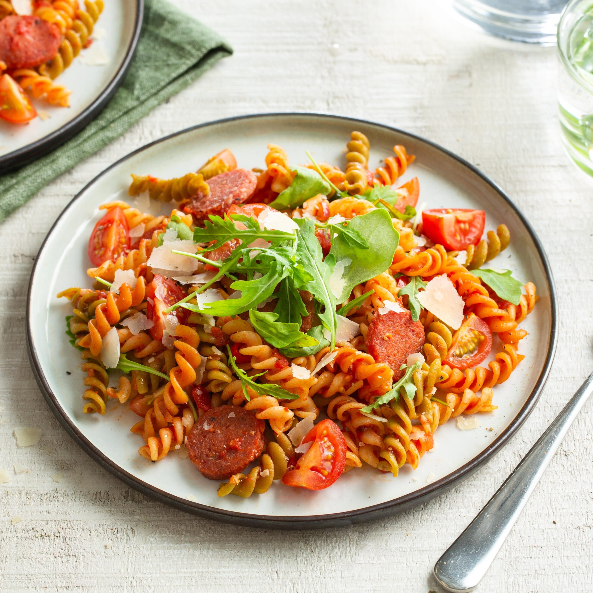

Home
Spaghetti Carbonara

Description:
Spaghetti Carbonara is a rich and creamy Roman pasta dish made with eggs, cheese, pancetta and black pepper.
Despite having no cream, it achieves an incredibly silky sauce that coats every strand of pasta.
Ingredients:
- 400g spaghetti
- 200g pancetta or guanciale, diced
- 4 egg yolks
- 100g pecorino romano, grated
- 50g parmesan, grated
- Black pepper to taste
- Salt for pasta water
Steps:
- Bring a large pot of salted water to a boil
- Cook spaghetti until al dente, reserve 1 cup of pasta water
- Fry pancetta in a pan until crispy, then remove from heat
- Whisk together egg yolks, pecorino and parmesan in a bowl
- Add cooked spaghetti to the pan with pancetta
- Remove from heat and add egg mixture, tossing quickly
- Add pasta water little by little until sauce is silky and creamy
- Season generously with black pepper and serve immediately